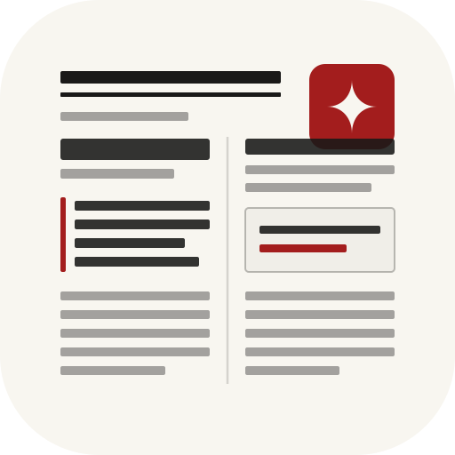
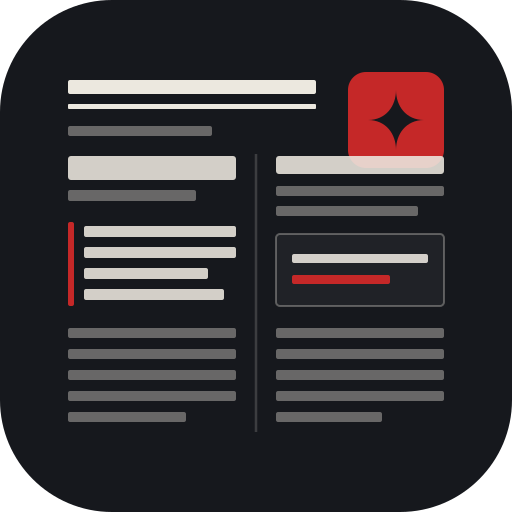

RFC-004 视觉规范 · 品牌徽标
百年大报，
为 AI 的思考灵光盖上朱砂印
摒弃千篇一律的现代科技蓝与大圆角聊天气泡。《AI 讨论纪事报》图标回归经典新闻纸质感、牛津双线排版与活字印刷实体，右上角以一枚纯正朱砂方印阴刻思维火花（✦），宣告思考的存录与典藏。

- 设计方向
- 百年大报 · 朱砂存录 (The Broadsheet & Vermilion Seal)
- 视觉结构
- 顶部牛津双线 + 双栏活字排版 + 右上角朱砂红方印
- 核心色彩
- 新闻纸温润暖白 (#F8F6F0) + 活字水墨黑 (#1A1918) + 2% 纯正朱砂红 (#A31D1D)
- 多端阶梯
- 16px 极简轮廓 / 32px-48px 实体剪影 / 128px-512px 完整活字版面
- 系统适配
- Chrome MV3 多分辨率 PNG + Android Adaptive Icon 原生自适应
多尺度阶梯验证 (Chrome 扩展 & Favicon)
16 px（放大 8×）
32 px（放大 2×）
48 px
128 px
512 px
深色报房模式 (Dark Mode)

夜间排印墨色自适应
深色版绝非简单颜色反相。底板沉降至深夜油墨黑 #16181D，活字线条由黑转为温润铅白 #ECE8DF，朱砂红微调提亮至 #C52828，确保夜间模式下对比度清澈而毫不刺眼。
色彩纪律
新闻纸 · 基底
#F8F6F0活字浓墨
#1A1918朱砂印泥红
#A31D1D暗夜油墨
#16181D铅白活字
#ECE8DF暗夜朱砂
#C52828关键设计取舍与军规
- 16 px 极限强化在 16px 微小分辨率下，大幅加粗牛津双线并将右上角朱砂印放大至占版面 1/4，即便在拥挤的浏览器扩展栏或标签页 Favicon，那一抹朱砂红依然瞬间击中眼球。
- 告别泛滥科技蓝彻底弃用 #3B6FF5 电光蓝，将 100% 的视觉重心交付给新闻纸与浓墨，仅保留 2% 纯正朱砂红作为全局灵魂。
- Android 自适应安全区前景图将大报与印章精密收纳在中央 68% 黄金视线圆内，全面适配三星、小米、Pixel 等各种圆形、圆角矩形及超椭圆桌面裁切。
规范资产清单
| 资产路径 | 目标平台 / 规格 | 说明 |
|---|---|---|
icons/icon.svg | 全端母版 (512x512) | 主矢量源文件，支持 CSS prefers-color-scheme |
icons/icon-small.svg | 32px / 48px | 精简微排版，强化主轮廓 |
icons/icon-tiny.svg | 16px | 高对比极简轮廓，扩展栏专用 |
icons/icon16 / 32 / 48 / 128.png | Chrome MV3 Extension | 桌面扩展各分辨率位图产物 |
icons/icon-512.png / icon-dark-512.png | Web Store / README | 高清展示图与深色模式参考 |
android/app/src/main/res/mipmap-* | Android Capacitor App | Adaptive Icon 前景层与各密度 mipmap |
scripts/generate-icons.js | CI / 构建脚本 | 基于 rsvg-convert 的自动化导出脚本 |